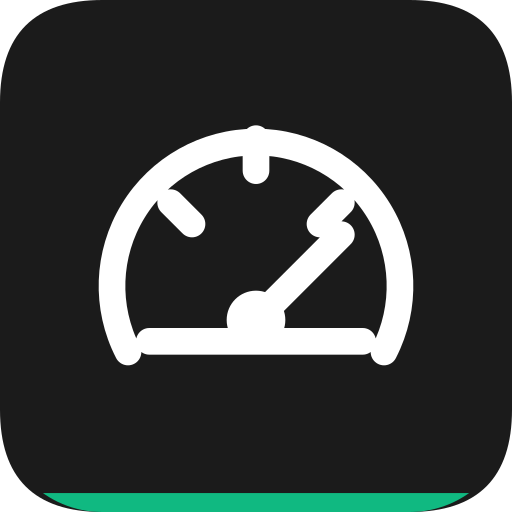

App details
GPS Speedometer
See your GPS speed, distance and journey time on a large, clear display.
What it’s for
Large GPS speed display with current, maximum and average speed, distance, elapsed time, signal-quality feedback and an optional mirrored display.
Main features
- Current, maximum and average speed.
- Kilometres per hour, miles per hour or knots.
- Distance, elapsed time and moving time.
- GPS quality indicator and optional mirrored display.
This app is planned. The description presents documented plans, not an app available to download. The final design and app still need approval and testing; there is no announced release date.
How to use
Allow location, wait for a usable GPS fix and start a measurement session. Choose km/h, mph or knots; the display shows current and maximum speed, average and moving average, distance and elapsed or moving time. Stop or reset the session separately. The mirrored display can make the same values easier to view in a suitable setup.
Important limits
GPS quality, buildings and signal loss affect readings. Use the device safely without operating it while driving. This is not a certified speedometer, map, speed-limit database or navigation system.
Offline use, permissions and purchases
The planned core functions run on the device without a JN86 account. Advertising, purchases, optional downloads and external links may need an internet connection. Offline core operation does not rule out separate service data flows.
Android 7.0 or newer is the common planned baseline. Individual sensor and platform features still depend on the device.
Permissions
Location permission is needed for the active GPS session. Camera, microphone and contacts are not needed. No continuous background location logger is planned.
Local data
Current speed, distance and time are session data, not a stored route. Display settings may persist locally; no long-term journey history or background GPS logger is planned.
Advertising and purchases
The plan keeps every core feature free, with banner advertising and an optional one-time Google Play purchase to remove ads. There is no subscription. Actual local prices will come from Play; advertising providers, consent choices and SDK data handling must be specified before launch.
First version and later ideas
The functions above belong to the documented plan for the first version. Features mentioned below as excluded or later ideas are not promised as current capabilities.
Speed and current-session statistics are included. Route recording, maps, radar alerts and saved journey history are excluded.
Availability
This app is being created. The features described here are planned; it is not yet available to download.